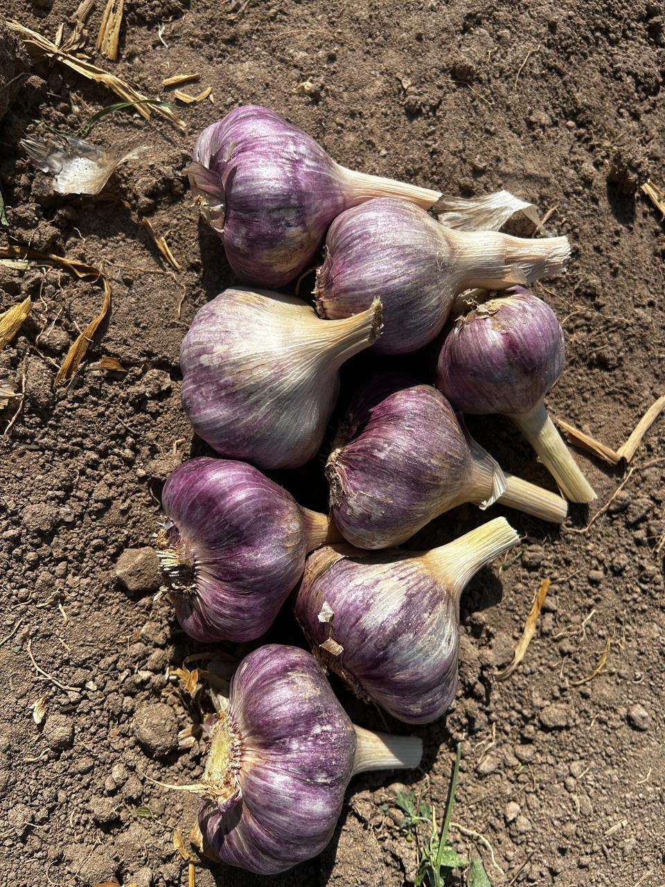
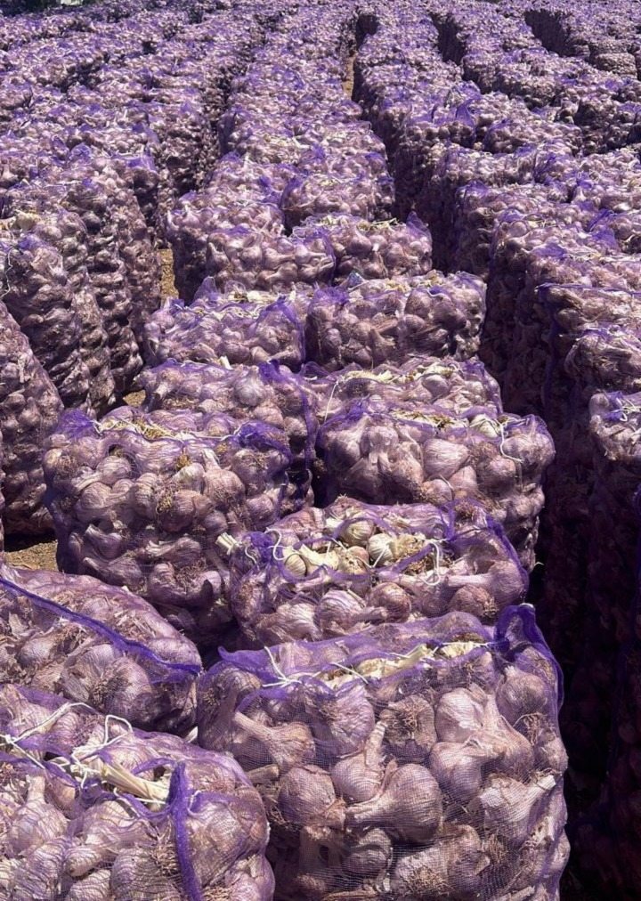

Ajo
El ajo (Allium sativum) es una planta culinaria conocida por sus propiedades medicinales y beneficios para la salud, como el fortalecimiento del sistema inmunitario, la mejora de la salud cardiovascular y la reducción de la inflamación
Variedades
Ajo Chino Blanco
Color: Blanco
Tamaño
- Calibre 5 - 46 mm a 55 mm
- Calibre 6 - 56 mm a 65 mm
- Calibre 7 - 66 mm a 75 mm
Packing
Cajas de cartón de 10 kg o 22 lb / Mallas de 25 kg o 55 lb
1 / 3

Los mejores productos y la mejor calidad
2 / 3

Hecho por una cadena autosostenible.
3 / 3

Hecho por una empresa familiar.